Previous slide Next slide Toggle fullscreen Open presenter view
CEN429 Secure Programming · Week 2
Computer Viruses and Security Models
CEN429 Secure Programming — Week 2
Asst. Prof. Dr. Uğur CORUH · 25.09.2026
RTEU Computer Engineering · 2026-2027 Fall
CEN429 Secure Programming · Week 2
Today's Plan (3 Hours)
Hour
Topic
1
Malware: history, anatomy, types · concealment
2
Demo 1–2 · countermeasures · attack tree (Demo 4 ) · access and models (Demo 3, 6 )
3
CWE · OWASP · CVE · CVSS (Demo 5 ) · lifecycle · project
Learning outcome: LO.1 (identifies and classifies common software security vulnerabilities)
RTEU Computer Engineering · 2026-2027 Fall
CEN429 Secure Programming · Week 2
What We Bring from Earlier Weeks
Asset, threat, vulnerability, risk and the attacker model — the language for telling an asset's value, the(Week 1) STRIDE and the attack tree — asking about the threats at an interface with STRIDE's six letters, then(Week 1)
This week: we make this language concrete through malware (the threat side) and access models (the defencecost to the attack tree and compute the cheapest attack path (Demo 04).
RTEU Computer Engineering · 2026-2027 Fall
CEN429 Secure Programming · Week 2
This Week's Concepts
Each term is defined once, where it first appears in the body; here we only mark where .
Concept
Where
Malware
Section 1
A virus's three parts
Section 1
Malware types
Section 1
Concealment: polymorphic/metamorphic
Section 2
Detection methods
Section 2
Entropy
Section 2
Audit log
Section 3
Access control
Section 4
DAC / MAC / RBAC
Section 4
Bell–LaPadula, Biba, Clark–Wilson
Section 4
CWE
Section 5
CVE and CVSS
Section 5
OWASP Top 10 and MASVS
Section 5
Vulnerability lifecycle
Section 5
RTEU Computer Engineering · 2026-2027 Fall
CEN429 Secure Programming · Week 2
How Do the Demos Work?
One source, two platforms: Windows (Visual Studio 2022 Community, MSVC) and WSL/Linux (GCC)
Demos that need hashing/encryption use the OS's BCrypt library on Windows and OpenSSL on Linuxcode/common/cen429_kripto.h) — you don't need to install OpenSSL on Windows either
Build: Windows .\build.ps1 · WSL/Linux ./build.sh
Run: in each demo's folder, Windows .\demo.ps1 · WSL/Linux sh demo.sh
Demo 6 (TOCTOU) only runs on WSL/Linux
⚠️ Ethics: No demo contains real malware, self-replicating code, file deletion/encryption, or a networksafe simulations that run in their own folder without administrator rights; only
RTEU Computer Engineering · 2026-2027 Fall
CEN429 Secure Programming · Week 2
1. Malware: Types and History
RTEU Computer Engineering · 2026-2027 Fall
CEN429 Secure Programming · Week 2
"Virus" Is Not Everything
Malware: any program that causes harm without its owner's consent.
Virus is only one type of malware.
The distinction is made by how it spreads :
Virus: attaches to another file, spreads when the carrier runsWorm: spreads on its own, over the networkTrojan horse: looks innocent, does not copy itselfRansomware / rootkit / bot / wiper: payload or behaviour types
RTEU Computer Engineering · 2026-2027 Fall
CEN429 Secure Programming · Week 2
The Week's Three Parts — Diagram
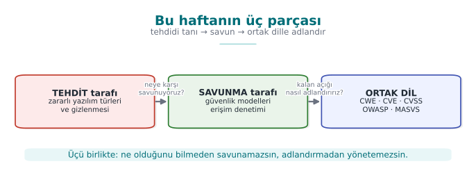
Threat: malware types and concealmentDefence: access control and formal modelsCommon language: CWE · CVE · CVSS · OWASP · MASVS
RTEU Computer Engineering · 2026-2027 Fall
CEN429 Secure Programming · Week 2
A Short History — Malware and Security Models
1949 — von Neumann: self-reproducing automata (the virus's mathematical root)1971 Creeper · 1986 Brain (first PC virus) · 1988 Morris Worm halts the internet1973–77 — Bell–LaPadula (confidentiality), Biba (integrity); 1987 Clark–Wilson1999 → 2006 — CVE · CWE · CVSS : a common classification language
Two separate strands: recognising malware + modelling access . Today we see both at once.
RTEU Computer Engineering · 2026-2027 Fall
CEN429 Secure Programming · Week 2
A Short History of Malware — Diagram
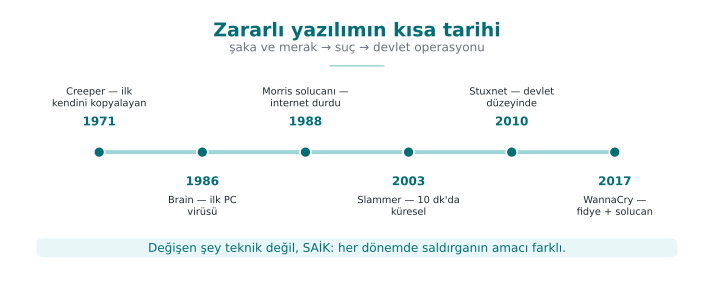
RTEU Computer Engineering · 2026-2027 Fall
CEN429 Secure Programming · Week 2
Short History: Milestones
Year
Event
Type
1984
Cohen's definition
Theory: "complete detection is impossible"
1986
Brain
First widespread PC virus (boot sector)
1988
Morris
First major worm to spread across the internet
2000
ILOVEYOU
Millions via an email attachment
2001
Code Red
Worm spreading in memory via a network flaw
2010
Stuxnet
Worm targeting industrial controllers
2017
WannaCry
Self-spreading ransomware
2017
NotPetya
A wiper (destructive) disguised as ransomware
RTEU Computer Engineering · 2026-2027 Fall
CEN429 Secure Programming · Week 2
Cohen 1984: The Limit of Detection
A virus is a program that can copy itself (possibly by modifying itself) into other programs.
Cohen proved: there is no general algorithm that correctly answers "is this program a virus?" in every case (it reduces from the halting problem).
Practical consequence: no antivirus can detect at 100%.
✅ False positive: flags a clean file
❌ False negative: misses a piece of malware
We will see this with our own eyes in Demo 01.
RTEU Computer Engineering · 2026-2027 Fall
CEN429 Secure Programming · Week 2
A Virus's Three Parts
Part
Job
Disease analogy
Infection mechanism Copies itself
Entering a cell and multiplying
Trigger The "when?" condition
Incubation period
Payload The actual damage
Symptoms
Code that waits for the trigger condition and then goes off is called a logic bomb .
No part is mandatory: there are viruses that only spread, with no payload (still a vulnerability all the same).
RTEU Computer Engineering · 2026-2027 Fall
CEN429 Secure Programming · Week 2
A Virus's Three Parts — Diagram
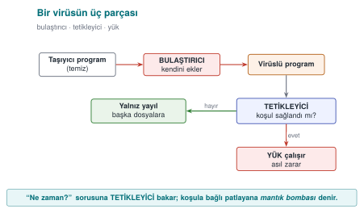
RTEU Computer Engineering · 2026-2027 Fall
CEN429 Secure Programming · Week 2
Virus Subtypes
Program (file) virus: infects an executable file; when the file runs, the virus runs too.Macro virus: written in an office document's macro language; runs when the document opens (Melissa, 1999).Boot sector virus: infects the disk's first sector, runs before the operating system (Brain, 1986).
Modern UEFI Secure Boot has made this class much harder.
RTEU Computer Engineering · 2026-2027 Fall
CEN429 Secure Programming · Week 2
Worm, Trojan Horse, Ransomware
Type
Spread
Example
Worm On its own, over the network; no user needed
Morris, Code Red, WannaCry
Trojan horse Looks innocent; the user runs it; doesn't copy itself
"Free game", fake update
Ransomware Encrypts files, demands money
CryptoLocker, WannaCry
A worm's danger is speed: hundreds of thousands of machines within minutes.
RTEU Computer Engineering · 2026-2027 Fall
CEN429 Secure Programming · Week 2
Other Types
Rootkit: hides itself and other malware from the operating system (removes itself from file/process/network listings). The hardest class to detect.
Bot / botnet: a network of machines taking remote commands (DDoS, spam, cryptomining).
Spyware / adware: collects data or shows adverts.
Wiper: looks like ransomware but permanently destroys data (NotPetya). The goal is not money but destruction.
Backdoor: leaves behind hidden access.
RTEU Computer Engineering · 2026-2027 Fall
CEN429 Secure Programming · Week 2
How Fast Does a Worm Spread?
The SI model — susceptible (S) and infected (I) machines:
i(t+dt) = i(t) + beta * i(t) * (1 - i(t)/N) * dt
beta * i: as infected machines multiply, scanning speeds up → exponential growth(1 - i/N): as susceptible machines shrink, the hit rate drops → saturation Result: a quiet opening → a sudden explosion → saturation (an S-curve)
⚠️ The defender's only window is the opening phase
RTEU Computer Engineering · 2026-2027 Fall
CEN429 Secure Programming · Week 2
The SI Model: Step by Step
S (susceptible): not yet infected, vulnerable machine.I (infected): already infected, itself scanning too.N: total number of vulnerable machines (S + I).Every infected machine scans a random address per unit time; if the address happens to hit a susceptible machine, it infects that one too.
RTEU Computer Engineering · 2026-2027 Fall
CEN429 Secure Programming · Week 2
Epidemic Model — Diagram
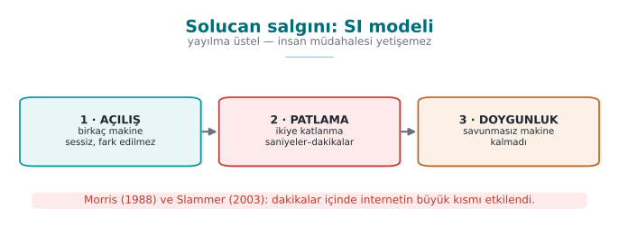
RTEU Computer Engineering · 2026-2027 Fall
CEN429 Secure Programming · Week 2
Demo 09 — Epidemic Simulation
code/week-02/09-salgin-simulasyonu · calculation only, no network
Senaryo: Slammer benzeri (rastgele tarama, hizli UDP)
54 s 78 0.1% |..............................|
1.5 dk 1430 1.9% |#.............................|
2.4 dk 45601 60.8% |##################............|
3.3 dk 74429 99.2% |##############################|
%90 doygunluk: Code Red ~13.3 sa · Slammer ~2.7 dk · Hitlist ~50 s
Code Red (2001): ~359,000 servers · doubling time ~37 min
Slammer (2003): a single 404-byte UDP packet · doubled every ~8.5 s
✅ Lesson: human-speed response can't keep up → patch in advance, close ports, automate defence
RTEU Computer Engineering · 2026-2027 Fall
CEN429 Secure Programming · Week 2
Real Numbers: Code Red vs. Slammer
Event
Entry path
Speed
Code Red (2001)
IIS .ida overflow (CVE-2001-0500)
~359,000 servers; doubling time ~37 min
SQL Slammer (2003)
SQL Server resolution service, single 404-byte UDP packet (CVE-2002-0649)
doubled every ~8.5 s; 90% within ~10 min
Two things made Slammer fast: a single packet was enough (no connection setup), and it scanned targets as fast as possible .
RTEU Computer Engineering · 2026-2027 Fall
CEN429 Secure Programming · Week 2
Why Did Slammer Slow Down?
After the first minute, its spread rate dropped.
Why? Not defence — the network's bandwidth filled up .
The worm clogged its own propagation channel with its own traffic.
Lesson: sometimes the attacker's own success creates its own limit.
RTEU Computer Engineering · 2026-2027 Fall
CEN429 Secure Programming · Week 2
Doubling Time
The time it takes for the number of infected machines to double is the most intuitive measure of an epidemic's speed.
Code Red: doubling time ~37 minutes .
Slammer: doubling time ~8.5 seconds .
A ~260-fold difference — even though both are "worms," the defence window is completely different .
RTEU Computer Engineering · 2026-2027 Fall
CEN429 Secure Programming · Week 2
Reading the Demo 09 Output: The Opening Phase
In the first 54 seconds only 78 machines are infected (0.1%).
Almost nothing is visible on the graph.
1.5 minutes later the explosion begins .
Saying "it's small for now" is the most expensive mistake with exponential growth.
RTEU Computer Engineering · 2026-2027 Fall
CEN429 Secure Programming · Week 2
Reading the Demo 09 Output: Speed and Hitlist
Speed (beta): raising the scanning speed brings saturation down from hours to minutes .That's why defence must be automatic : a firewall rule, network segmentation, patching in advance.
Hitlist: if the attacker starts with a ready-made target list, the opening phase is skipped .The defender's already-narrow window closes completely .
RTEU Computer Engineering · 2026-2027 Fall
CEN429 Secure Programming · Week 2
A Lesson for the Programmer (Epidemics)
The programmer does not determine the propagation speed.
But the programmer makes the mistake that makes the initial infection possible .
Code Red, Slammer, Blaster — all of them spread through a bounds-unchecked overflow.
Every listening network port is an attack surface ; never open a service you don't use.
RTEU Computer Engineering · 2026-2027 Fall
CEN429 Secure Programming · Week 2
Try It Yourself: What If Beta Is Halved?
Halve the beta value inside salgin.c and rerun it.
Question: How does the saturation time change? In the hitlist scenario, if you raise i0 to 100, how much of a difference remains?
Answer: Halving beta slows growth, so the saturation time lengthens . In the hitlist scenario the opening phase is already skipped, so raising i0 has a smaller effect — the hitlist's real power is skipping the opening, not the starting count.
RTEU Computer Engineering · 2026-2027 Fall
CEN429 Secure Programming · Week 2
2. Propagation and Concealment
RTEU Computer Engineering · 2026-2027 Fall
CEN429 Secure Programming · Week 2
The Concealment Ladder
Method
What changes?
Defence
Encryption Body encrypted, decryptor fixed
Sign the decryptor
Oligomorphism A handful of decryptor forms
Sign them all
Polymorphism Decryptor regenerated in every copy
Decrypt via emulation
Metamorphism No encryption, the entire code is rewritten
Watch behaviour
Key idea: the encrypted body looks different in every copy, but always the same once decrypted.
RTEU Computer Engineering · 2026-2027 Fall
CEN429 Secure Programming · Week 2
Structure of an Encrypted/Polymorphic Virus
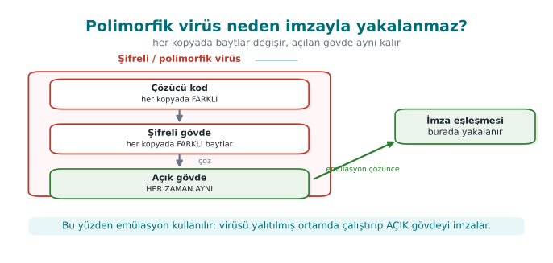
Emulation runs the decryptor exactly to see this last box.
RTEU Computer Engineering · 2026-2027 Fall
CEN429 Secure Programming · Week 2
Demo 01 — Toy Antivirus
code/week-02/01-imza-tarayici · Book: Recipe 12.1
A harmless, non-executable "CAPSULE" format: header + decryptor + body.
Four methods, four limits:
Method
Catches
Evaded by
Hash The exact same file
A single byte changing
Pattern A small change
The decryptor changing (polymorphism)
Heuristic Signature-free samples
False positives/negatives
Emulation All of them
Anti-emulation
RTEU Computer Engineering · 2026-2027 Fall
CEN429 Secure Programming · Week 2
Demo 01 — Hash Is Fragile, Pattern Is Resilient
ADIM 2 (hash):
ornek_a.bin YAKALANDI Ornek.MaviKedi.A
ornek_a_1bayt.bin TEMIZ <- tek bayt degisti, ozet bambaska
ADIM 3 (desen):
poli_1.bin YAKALANDI Ornek.Cozucu.xs32
poli_2.bin YAKALANDI Ornek.Cozucu.xs32
poli_3.bin TEMIZ <- cozucu de degisti (polimorfizm)
Hash breaks on a single byte due to the avalanche effect; pattern catches the decryptor, but polymorphism evades it too.
RTEU Computer Engineering · 2026-2027 Fall
CEN429 Secure Programming · Week 2
Demo 01 — Heuristic: Two Kinds of Error
ADIM 5 (sezgisel):
ornek_a.bin TEMIZ puan= 0 <- YANLIS NEGATIF (kacirdi)
poli_1.bin SUPHELI puan= 80
arsiv.bin SUPHELI puan= 50 <- YANLIS POZITIF (zararsiz)
Caught the polymorphic sample without a signature ✅
But flagged a harmless high-entropy file as suspicious ❌
And missed the plain-body sample ❌
This is exactly Cohen's uncertainty.
RTEU Computer Engineering · 2026-2027 Fall
CEN429 Secure Programming · Week 2
Demo 01 — Emulation Solves All of Them
ADIM 6 (emulasyon):
poli_1.bin YAKALANDI ... | 5 komut, 0 BOS, xs32
poli_2.bin YAKALANDI ... | 5 komut, 0 BOS, xs32
poli_3.bin YAKALANDI ... | 8 komut, 4 BOS, lcg8
Runs the decryptor in a safe virtual machine and scans the unpacked body.
All three polymorphic copies reduced to the same signature .
Powerful but expensive ; can be evaded if the malware detects "I'm in a virtual machine."
Conclusion: one method isn't enough → layered defence.
RTEU Computer Engineering · 2026-2027 Fall
CEN429 Secure Programming · Week 2
Entropy: A Measure of Randomness
H ~ 0: always the same byte · H ~ 4–5: text/codeH ~ 6: compiled program · H ~ 8: encrypted/packed/random
Antivirus: "is this code packed/encrypted?" · EDR: "a process rapidly encrypting files?" (ransomware)
RTEU Computer Engineering · 2026-2027 Fall
CEN429 Secure Programming · Week 2
Demo 02 — Entropy Meter
code/week-02/02-entropi
tekduze.txt 0.00 |........................| tekduze
belge.txt 4.17 |#############...........| dusuk
kod.bin 6.23 |###################.....| orta
sifreli.bin 7.95 |########################| YUKSEK
rastgele.bin 7.95 |########################| YUKSEK
⚠️ Entropy alone doesn't say "malicious": .zip/.png are high too. It's a clue only when it's high in an unexpected place .
RTEU Computer Engineering · 2026-2027 Fall
CEN429 Secure Programming · Week 2
Demo 02 — Hot Zone and Ransomware Signature
Karma dosya (pencere 512):
1024-1535 4.14 dusuk
1536-2047 7.56 YUKSEK <- gizli sifreli bolum
2048-2559 7.66 YUKSEK
Fidye izi: belge.txt 4.17 --> sifreli.bin 7.95
A packed program's pattern: a small unpacker + a high-entropy body.
If a process makes this jump across many files in a short time, behaviour-based protection raises an alarm.
RTEU Computer Engineering · 2026-2027 Fall
CEN429 Secure Programming · Week 2
Countermeasures
Method
Strong
Weak
Signature-based
Fast, low false-positive rate
Misses unknown/polymorphic samples
Heuristic
New, signature-free samples
False positives/negatives
Behaviour-based
Resistant to concealment
Damage may already have started
Sandbox
Sees real behaviour
Slow; anti-VM
Emulation
Unpacks the decryptor
Anti-emulation
Reputation / cloud
Good against fast-spreading threats
Privacy, connectivity
Modern EDR combines all of them, weighting behaviour most heavily.
RTEU Computer Engineering · 2026-2027 Fall
CEN429 Secure Programming · Week 2
Countermeasure Layers — Diagram
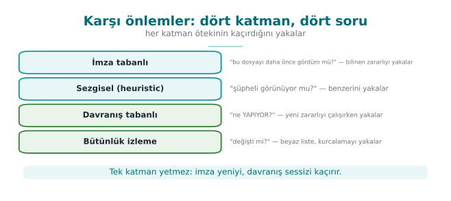
RTEU Computer Engineering · 2026-2027 Fall
CEN429 Secure Programming · Week 2
A Behavioural Trace in EDR
A process reads hundreds of files in a short time and writes them back in high-entropy form.
Without even looking at the content, this behaviour alone is near-certain evidence of ransomware .Behaviour-based protection looks at what a file "does," not what it "is."
This clue is the runtime version of the same idea as the entropy jump in Demo 02.
RTEU Computer Engineering · 2026-2027 Fall
CEN429 Secure Programming · Week 2
The technique malware uses to hide and the technique legitimate software uses to protect itself are very often the same .
The difference is intent and context : one protects your asset, the other evades signatures.
The encrypted body + decryptor pattern exists both in a polymorphic virus and in a protected mobile app.
This symmetry will come back throughout the term (Weeks 9, 11).
RTEU Computer Engineering · 2026-2027 Fall
CEN429 Secure Programming · Week 2
Example: Why Does a Mobile Payment App Keep Constants Encrypted?
Sensitive strings/constants are kept encrypted, decrypted only at use, to slow down reverse engineering.
When an assessor sees a high-entropy region in a binary, they ask:
Where is the decryptor?
How does it find the key?
How long does the key stay exposed in memory?
The same entropy measurement is the common tool of both the antivirus and the assessor.
RTEU Computer Engineering · 2026-2027 Fall
CEN429 Secure Programming · Week 2
Reputation / Cloud-Based Detection
The file's prevalence, source, and digital signature are queried in the cloud.
"Seen on millions of users and clean" is trusted; "never seen, unsigned" is suspicious.
Strength: updates instantly against fast-spreading threats.
Weakness: needs connectivity and raises privacy concerns (file information goes to the cloud).
RTEU Computer Engineering · 2026-2027 Fall
CEN429 Secure Programming · Week 2
Demo 07 — Rule-Based Detection
code/week-02/07-kural-motoru · a YARA-like mini engine, our own harmless patterns
kural Kelime_Baglam {
dizge $a = "indir"
dizge $b = "calistir"
dizge $sihir = "KAPSUL/1"
kosul ($a and $b) and $sihir
}
Step
Result
Lesson
Harmless manual
Kelime_Cifti matched❌ A context-free rule → false positive
Modified variant
only the wildcard (??) pattern caught it
✅ Target the skeleton that doesn't change
Corrupt rule file
REJECTED ✅ A detection tool is a parser too
RTEU Computer Engineering · 2026-2027 Fall
CEN429 Secure Programming · Week 2
Blacklist vs. Whitelist
Blacklist: "recognise the bad" — list known malware, allow everything else.Whitelist: "recognise the good" — list known-good, and be suspicious of everything else .Integrity monitoring is the file-level form of a whitelist.
While the system is known-good, every file's digest is written to a manifest , then compared regularly.
RTEU Computer Engineering · 2026-2027 Fall
CEN429 Secure Programming · Week 2
Question — Which Type, Which Layer?
An email attachment named "invoice.pdf.exe" runs when opened, and mails itself to everyone in the address book.
Question: What type of malware is this? Which layer would catch it first?
Answer: A worm/trojan mix — the user opens it (starts like a trojan horse), then it spreads on its own (like a worm). The first layer to catch it: signature/pattern (if it's a known sample) or heuristic (if it's new).
RTEU Computer Engineering · 2026-2027 Fall
CEN429 Secure Programming · Week 2
Question — Supply Chain Attack
A backdoor is added, during the build, to a software's official update (SUNBURST-like).
Question: Would signature-based detection and whitelisting catch this?
Answer: No, both fail. The file is validly signed and already on the whitelist (the update comes from the official source). This is exactly what makes a supply chain attack terrifying: the source you trust has itself been compromised.
RTEU Computer Engineering · 2026-2027 Fall
CEN429 Secure Programming · Week 2
Demo 08 — Integrity Monitoring (Whitelist)
code/week-02/08-butunluk-izleme · SHA-256 manifest + HMAC seal
DEGISTI kutuphane.bin c603d7c6... -> 64b8f2b2... (49->65 B)
SILINDI veri.txt (manifestte var, klasorde yok)
YENI gizli.bin (taban cizgisinde yok)
-- saldirgan manifesti yeniden yazar --
SONUC: butunluk korunmus <- izleyici KANDIRILDI
MUHUR GECERSIZ -> manifeste GUVENME
✅ Catches a digest change · ⚠️ the expected values must be protected too (HMAC/signature, key kept separately)
Recipe 12.2: CRC32 → SHA-256/HMAC · runtime integrity checking in Week 6
RTEU Computer Engineering · 2026-2027 Fall
CEN429 Secure Programming · Week 2
Assessor: How to Break an Integrity Check?
A two-step test:
First modify a monitored file → is it detected?
Then try to modify the expected values too (the manifest, the embedded digest).
If the second test can't be passed, the check only protects against accidents , not against an attacker .
RTEU Computer Engineering · 2026-2027 Fall
CEN429 Secure Programming · Week 2
Constant-Time Comparison
When comparing two digests, does it stop at the first differing byte , or does it always take the same time ?
A time difference can leak the number of correct bytes (a timing side channel).
Integrity and HMAC comparisons must be done in constant time .
This is why Demo 08's HMAC seal uses a special comparison.
RTEU Computer Engineering · 2026-2027 Fall
CEN429 Secure Programming · Week 2
Why Isn't CRC32 Enough?
CRC32 was designed for error detection, not against an attacker .Finding different content that gives the same CRC32 value is easy (collisions are cheap).
An attacker can modify a file and restore the CRC to its old value .
That's why integrity checking needs a cryptographic digest (SHA-256) or a signature .
RTEU Computer Engineering · 2026-2027 Fall
CEN429 Secure Programming · Week 2
Incidents: How Did They Get In?
Incident
Entry path
Error class
Morris (1988)
fingerd gets() overflow · sendmail DEBUG · rsh trustCWE-120/242 · 489 · 287
Code Red (2001)
IIS .ida overflow (CVE-2001-0500)
CWE-120
Slammer (2003)
SQL resolution service, single UDP packet (CVE-2002-0649)
CWE-121
Blaster (2003)
RPC/DCOM overflow (CVE-2003-0352)
CWE-120
Conficker (2008)
Server service path handling (CVE-2008-4250) · weak password
CWE-119 · 521
WannaCry (2017)
SMBv1 (CVE-2017-0144) · patch had shipped 2 months earlier
memory safety
NotPetya (2017)
distributed via an update server
CWE-494
SUNBURST (2020)
backdoor in the build environment
supply chain
RTEU Computer Engineering · 2026-2027 Fall
CEN429 Secure Programming · Week 2
The Skeleton of an Incident Review — Diagram
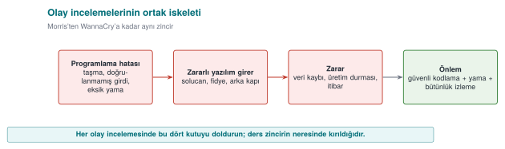
RTEU Computer Engineering · 2026-2027 Fall
CEN429 Secure Programming · Week 2
Lessons for the Programmer from These Incidents
Bounds checking: most 1988–2008 epidemics were a single buffer overflow (Weeks 1 and 4)Leaving debug code in a release (Morris / sendmail DEBUG)Opening an unnecessary service: every port is an attack surface (Slammer, Blaster)Signed updates + client-side verification (NotPetya) — Weeks 3 and 10Build environment and supply chain security (SUNBURST) — Week 5 SBOMThe update mechanism is a security feature: patch delay = an open door
RTEU Computer Engineering · 2026-2027 Fall
CEN429 Secure Programming · Week 2
Stuxnet (2010): A Nation-State-Level Attack
Target: industrial controllers (PLCs ) — a uranium enrichment plant.
Entry: code loading via merely displaying a shortcut (.lnk) file + four zero-day flaws.
Stolen driver signatures were used — it looked trustworthy because it was signed.Lesson for the programmer: never execute code while displaying content; protect signing keys in hardware (an HSM).
RTEU Computer Engineering · 2026-2027 Fall
CEN429 Secure Programming · Week 2
Trend: 1988–2008 vs. After 2017
1988–2008: most epidemics spread through a single buffer overflow (Morris → Conficker).After 2017: the entry point shifted to update and build processes (NotPetya, SUNBURST).Instead of breaking the code, the attacker now hijacks the path the code takes to reach you .
Two ends of the defence: bounds checking (Weeks 1, 4) + signed updates/supply chain (Weeks 3, 5, 10).
RTEU Computer Engineering · 2026-2027 Fall
CEN429 Secure Programming · Week 2
WannaCry: Three Lessons in One Incident
Topic
What happened in WannaCry?
This week's connection
Propagation Spread like a worm via an SMB flaw (EternalBlue), with no user action
Worm definition, epidemic model
Payload Encrypted files and demanded ransom
Entropy jump (Demo 02)
Patch gap The patch had shipped weeks before the attack
Update = a security feature
A single incident ties together this week's three main topics.
RTEU Computer Engineering · 2026-2027 Fall
CEN429 Secure Programming · Week 2
A Patch Delay Is a Vulnerability
The patch for WannaCry's flaw had been released two months before the attack.
Slammer's had existed months in advance too.
Conclusion: the update mechanism is part of the security feature .
A product that's hard/slow to update keeps even fixed bugs open for months .
RTEU Computer Engineering · 2026-2027 Fall
CEN429 Secure Programming · Week 2
Discussion: Why Are Macros Disabled by Default?
Question: Since 2022, Office has blocked macros by default in documents that come from the internet. Which weakness of old epidemics like Melissa and ILOVEYOU does this close?
Answer: It closes the propagation path that relied on the user falling for the "enable macros" trap. A safe default is stronger than user training: training may not work on every user, but a safe default protects everyone at once.
RTEU Computer Engineering · 2026-2027 Fall
CEN429 Secure Programming · Week 2
Supply Chain: From SUNBURST to NotPetya
NotPetya (2017): an accounting software's update server was hijacked, spreading to tens of thousands of machines.SUNBURST (2020): a monitoring software's build environment was breached, and a backdoor was added to a signed library.Common point: the attacker targets the source you trust , not you.
Defence: sign updates + verify on the client, protect the build environment (Week 5 SBOM).
RTEU Computer Engineering · 2026-2027 Fall
CEN429 Secure Programming · Week 2
One-Line Lessons from These Incidents
Incident
What should the programmer have done?
Morris
Bounds-checked reading, not leaving debug code in a release
Code Red / Slammer / Blaster
Validating network input length, closing unnecessary services
WannaCry
Bounds checking in the parser, disabling the old protocol, not delaying the patch
NotPetya
Signing updates and verifying them on the client
SUNBURST
Protecting the build environment, reproducible builds
RTEU Computer Engineering · 2026-2027 Fall
CEN429 Secure Programming · Week 2
Misconception: "Every Piece of Malware Is a Virus"
Misconception: Anything that infects gets called a "virus."
Reality: Virus is only one type — it attaches to a carrier and runs when the carrier runs. A worm needs no carrier; a trojan horse doesn't copy itself.
Getting the type wrong leads to the wrong defence: a worm needs a network patch , while a trojan horse needs user training .
RTEU Computer Engineering · 2026-2027 Fall
CEN429 Secure Programming · Week 2
Misconception: "My Signature Database Is Up to Date, I'm Safe"
Misconception: An up-to-date signature database is sufficient protection.
Reality: A signature only catches the known . A single-byte change evades a hash signature; a polymorphic copy whose decryptor has changed evades a pattern signature (Demo 01).
A signature is the start of defence, not the end.
RTEU Computer Engineering · 2026-2027 Fall
CEN429 Secure Programming · Week 2
Misconception: "High Entropy = Malicious"
Misconception: Every high-entropy file is suspicious.
Reality: Encrypted, compressed, and random data are always close to 8 ; so are .zip, .png, and an encrypted backup.
Entropy is only a meaningful clue in an unexpected place (Demo 02).
RTEU Computer Engineering · 2026-2027 Fall
CEN429 Secure Programming · Week 2
Misconception: The Limits of Sandbox and Emulation
"The sandbox came back clean, so it's clean." Malware can sense the virtual environment and go dormant ; the result means "it did nothing under these conditions," not "it's harmless."
"Emulation solves metamorphic malware too." Emulation catches the moment an encrypted body is decrypted; metamorphic code has no fixed body to decrypt. Behaviour-based detection is needed here.
RTEU Computer Engineering · 2026-2027 Fall
CEN429 Secure Programming · Week 2
Misconception: "We'll Buy a Product That Detects 100%"
Misconception: If we choose the right product, no malware slips through.
Reality: As Cohen (1984) proved, there is no general algorithm that answers "is this program a virus?" correctly in every case .
Every detection method strikes a balance between false positives and false negatives.
RTEU Computer Engineering · 2026-2027 Fall
CEN429 Secure Programming · Week 2
Misconception: "I Did Integrity Monitoring with a Plain SHA-256 List"
Misconception: A file list plus digests is sufficient integrity checking.
Reality: Just as the attacker modifies the file, they can update the list too.
Expected values must be keyed (HMAC) or signed , and must sit where the attacker cannot reach (Demo 08).
RTEU Computer Engineering · 2026-2027 Fall
CEN429 Secure Programming · Week 2
Misconception: "The Patch Shipped, We're Done"
Misconception: The risk ends the moment a patch is released.
Reality: The patch for the flaw WannaCry used had shipped about two months before the attack.
The risk lasts until the patch is applied ; a released patch also gives the attacker a roadmap .
RTEU Computer Engineering · 2026-2027 Fall
CEN429 Secure Programming · Week 2
Checklist — Malware and Detection
[ ] I can distinguish virus, worm, trojan horse, ransomware, rootkit, bot, spyware, and wiper by propagation and purpose .
[ ] I can show a virus's infection mechanism, trigger, and payload parts in one scenario.
[ ] I can explain every rung of the encrypted → oligomorphic → polymorphic → metamorphic ladder.
[ ] I can state the strong/weak side of hash, pattern, heuristic, behaviour/EDR, sandbox, and emulation.
[ ] I can show the opening/explosion/saturation phases and the hitlist effect in the SI epidemic model.
[ ] I can state one lesson each from Morris, Code Red, Slammer, Stuxnet, WannaCry, NotPetya, and SUNBURST.
RTEU Computer Engineering · 2026-2027 Fall
CEN429 Secure Programming · Week 2
3. Attack Trees and the Audit Log
RTEU Computer Engineering · 2026-2027 Fall
CEN429 Secure Programming · Week 2
Attack Tree = Quantitative Threat
Root: the attacker's goal · Branches: ways to reach it.
OR: the cheapest child is enough · AND: the sum of the children is needed.Writing a cost on the leaves finds the cheapest attack.
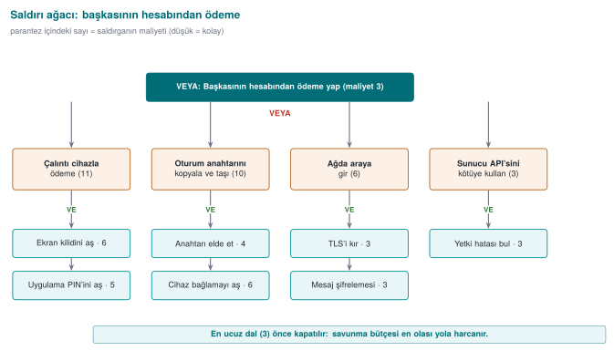
RTEU Computer Engineering · 2026-2027 Fall
CEN429 Secure Programming · Week 2
Steps for Building an Attack Tree — Diagram
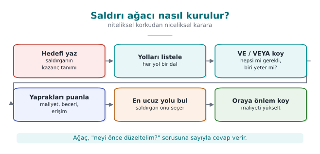
RTEU Computer Engineering · 2026-2027 Fall
CEN429 Secure Programming · Week 2
Demo 04 — Defence Raises the Cost
code/week-02/04-saldiri-agaci
ONCE: EN UCUZ SALDIRI = 2 (bellekten oku)
SONRA: EN UCUZ SALDIRI = 8 (RASP eklendi)
RASP (anti-debug, anti-hook) was added to the "read from memory" branch.The cheapest attack rose from 2 → 8 units; the weakest point changed .
This is how you justify a security investment with a number .
RTEU Computer Engineering · 2026-2027 Fall
CEN429 Secure Programming · Week 2
Misconception: "AND and OR Don't Matter"
Misconception: In an attack tree, the node type doesn't matter.
Reality: At an OR node the cheapest child is enough; at an AND node the sum of the children is needed.
Confusing them misidentifies the cheapest path, and defence spending goes to the wrong branch .
RTEU Computer Engineering · 2026-2027 Fall
CEN429 Secure Programming · Week 2
Misconception: "Let's Strengthen the Most Expensive Branch"
Misconception: Strengthening the seemingly most dangerous/complex attack path is best.
Reality: The attacker always picks the cheapest path. If the defence doesn't raise the cost of the cheapest path to the root, the cheapest attack's cost doesn't change at all (Demo 04).
RTEU Computer Engineering · 2026-2027 Fall
CEN429 Secure Programming · Week 2
Misconception: "Adding a Countermeasure Is Enough"
Misconception: Adding a defence node to the tree closes the risk.
Reality: Every countermeasure can itself be bypassed . Without writing the ways to defeat it (a counter-countermeasure ) under the countermeasure node, the calculation comes out optimistic .
RTEU Computer Engineering · 2026-2027 Fall
CEN429 Secure Programming · Week 2
Attack Tree vs. Audit Log: Two Questions
Attack tree: "Where does the attacker come from?" — a beforehand, planning question.Audit log: "Did they get in , what did they do?" — an afterward, evidence question.The only way to understand what happened after an incident, and find who's responsible, is a reliable record .
The book covers this in Recipe 13.11; the advice still holds today, only the tools have been updated.
RTEU Computer Engineering · 2026-2027 Fall
CEN429 Secure Programming · Week 2
Audit Log: What to Write, What Not to Write?
✅ Log it
❌ Never log it
Login attempts (who, when, from where)
Password, PIN, token, private key
Permission and setting changes
Full card number, personal data
Sensitive operations (approval, export, deletion)
Decrypted secret data
Security check results
Debug output in a release build
Recipe 13.11 · design the log assuming the attacker will read it too
RTEU Computer Engineering · 2026-2027 Fall
CEN429 Secure Programming · Week 2
Audit Log — Diagram
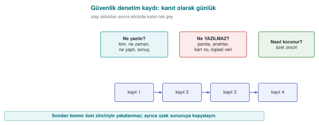
RTEU Computer Engineering · 2026-2027 Fall
CEN429 Secure Programming · Week 2
Demo 10 — Log Injection (CWE-117)
code/week-02/10-gunluk-enjeksiyonu
GUVENSIZ:
DENETIM giris kullanici=kayra
DENETIM giris kullanici=admin sonuc=BASARILI ... <- SAHTE satir
DENETIM giris kullanici=deniz^[[2K^Mgizli ... <- ekran silme
GUVENLI:
DENETIM giris kullanici=kayra\x0A2026-... (tek satir)
sahte 'admin BASARILI' satiri: 0
✅ Escape it (\xNN) · ✅ cap the length · ✅ syslog(LOG_INFO, "%s", girdi) — the input is never a format string
RTEU Computer Engineering · 2026-2027 Fall
CEN429 Secure Programming · Week 2
fprintf (log , "giris: %s\n" , kullanici_adi);
syslog(LOG_INFO, kullanici_girdisi);
User-supplied data must never be used in a log as an unescaped line break or directly as a format : syslog(LOG_INFO, "%s", girdi).
RTEU Computer Engineering · 2026-2027 Fall
CEN429 Secure Programming · Week 2
Digest Chain: Simple but Breakable
Idea: every record contains the digest of the previous record .
Modifying a record in the middle breaks the entire chain that follows .
Problem: the digest is unkeyed — an attacker can recompute the whole chain from scratch.
Solution: make the digest keyed → an HMAC chain (next slide).
RTEU Computer Engineering · 2026-2027 Fall
CEN429 Secure Programming · Week 2
Why Is Logging Removed from Release Builds?
A log is designed assuming an attacker can read it too .
Every secret written to a log has effectively been given to everyone who can access the log file.
Debug code silenced by a disabled flag stays in the binary.
It leaks information through its strings and can be turned back on — so it must be fully stripped from the release build.
RTEU Computer Engineering · 2026-2027 Fall
CEN429 Secure Programming · Week 2
Demo 11 — Tamper-Resistant Logging
code/week-02/11-kurcalamaya-dayanikli-gunluk · HMAC chain + key evolution
Attack
Evolving key
Static key
Modifying a record
✅ MAC:BOZUK
✅ caught
Deleting a record / reordering
✅ SIRA:BOZUK
✅ caught
Rewriting history with a compromised key
✅ TAMPERED
❌ appears INTACT
The key evolves one-way at every record, and the old key is deleted → records before the compromise stay protected
RTEU Computer Engineering · 2026-2027 Fall
CEN429 Secure Programming · Week 2
Forward Security: Why Does the Key Evolve?
After every record, the key changes through a one-way function; the old key is deleted .
When an attacker compromises the machine, they find only the current key.
They cannot go back from that point to the keys that sealed earlier records.
Result: records before the compromise stay protected (Schneier–Kelsey, 1999).
RTEU Computer Engineering · 2026-2027 Fall
CEN429 Secure Programming · Week 2
Question — Is Truncation from the End Caught?
Delete the last three lines from the chain Demo 11 produces.
Question: Will the verifier notice? Why?
Answer: Only if the chain's final value or record count is kept separately (on a remote server). If the chain itself is kept only in the file, truncation from the end does not break internal consistency — because there is no record after the deleted ones left to show an inconsistency.
RTEU Computer Engineering · 2026-2027 Fall
CEN429 Secure Programming · Week 2
Rule (Summary): Audit Log
Write user data by escaping and bounding it.
Never write secrets (password, key).Seal the log with a keyed chain ; evolve the key at every record.
Don't keep the verification key on the same machine as the log.Where possible, send records immediately to a separate server.
RTEU Computer Engineering · 2026-2027 Fall
CEN429 Secure Programming · Week 2
How Is This Applied in the Field? — Mobile Logging
In mobile apps, the on-device log is kept to a minimum and contains no sensitive fields.
Security events (integrity failure, debugger detection) are reported to the server .
This is the "reporting" leg of the RASP measures we'll see in Week 6.
The on-device log is in the attacker's hands; the real evidence is the remote copy.
RTEU Computer Engineering · 2026-2027 Fall
CEN429 Secure Programming · Week 2
Misconception: "Let's Log Everything"
Misconception: More information means better evidence.
Reality: Password, PIN, key, and the full card number must never go into a log (CWE-532).
A record carries just enough information to reconstruct the event: who, what, when, where, result.
RTEU Computer Engineering · 2026-2027 Fall
CEN429 Secure Programming · Week 2
Misconception: "I Wrote the Username As-Is"
Misconception: A field coming from the user can be written straight to the log.
Reality: An input containing a line break produces a fake log line (CWE-117, Demo 10).
Control characters must be escaped , or structured (field-by-field) logging must be used.
RTEU Computer Engineering · 2026-2027 Fall
CEN429 Secure Programming · Week 2
Misconception: "I Appended a Digest to the Record, So Tampering Will Show"
Misconception: Appending a digest to the end of the file is sufficient protection.
Reality: An attacker can recompute an unkeyed digest.
An HMAC chain catches insertion/modification; to catch truncation from the end , the final chain value must be kept separately (on a remote server ) (Demo 11).
RTEU Computer Engineering · 2026-2027 Fall
CEN429 Secure Programming · Week 2
Checklist — Attack Tree and Audit Log
[ ] I can solve an attack tree bottom-up with AND/OR rules and find the cheapest path.
[ ] I can show with a number how a defence changes the cheapest path (Demo 04).
[ ] I can list what should and shouldn't appear in an audit log line.
[ ] I can explain how log injection (CWE-117) is prevented.
[ ] I can state what an HMAC chain and key evolution catch, and what they can't catch .
RTEU Computer Engineering · 2026-2027 Fall
CEN429 Secure Programming · Week 2
4. Access Control and Models
RTEU Computer Engineering · 2026-2027 Fall
CEN429 Secure Programming · Week 2
Subject, Object, Right — and the Matrix
Subject (user/process) · Object (file/record) · Right (read/write/execute).
odeme_anahtarigunluk
application —
write
library read, write
write
attacker —
—
The matrix is stored in two forms: ACL (column: the object holds who can access it) · Capability (row: the subject's tickets).
RTEU Computer Engineering · 2026-2027 Fall
CEN429 Secure Programming · Week 2
DAC · MAC · RBAC
Model
Who decides?
Example
DAC The owner of the object
Unix chmod, Windows DACL
MAC System/policy (owner cannot change it)Bell–LaPadula, SELinux
RBAC Permissions attach to roles , users are assigned to roles
The "Accountant" role
Real systems use all three together ; the effective decision is usually the intersection .
DAC is flexible but leak-prone; MAC is strict (military/labelled); RBAC is enterprise , role-based and easy to administer.
RTEU Computer Engineering · 2026-2027 Fall
CEN429 Secure Programming · Week 2
DAC and MAC — Diagram
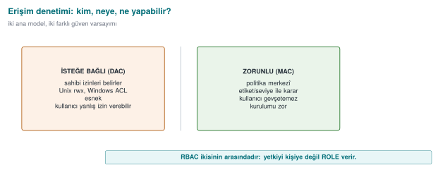
RTEU Computer Engineering · 2026-2027 Fall
CEN429 Secure Programming · Week 2
Demo 03 — DAC Alone (Matrix)
code/week-02/03-erisim-modeli
kutuphane OKU odeme_anahtari => IZIN
uygulama OKU odeme_anahtari => RED (matriste yok)
saldirgan OKU odeme_anahtari => RED
saldirgan YAZ gunluk => RED
Not even the application has direct access to the payment key → least privilege.
RTEU Computer Engineering · 2026-2027 Fall
CEN429 Secure Programming · Week 2
Bell–LaPadula: Confidentiality
Levels: Public < Confidential < Top Secret
No read up: cannot read something more confidential than itself.No write down (the *-property): cannot write to something less confidential than itself.
"Read down, write up" — confidential information cannot leak downward.
Example: a user labelled "Confidential" cannot read a "Top Secret" document; a "Top Secret" process cannot write to a "Public" file (this is how the leak is prevented).
RTEU Computer Engineering · 2026-2027 Fall
CEN429 Secure Programming · Week 2
Biba: Integrity (the Reverse of BLP)
Levels: External < Application < Kernel (trustworthiness)
No read down: cannot read data less trustworthy than itself.No write up: cannot write to data more trustworthy than itself.
"Read up, write down" — dirty information cannot rise upward and corrupt the clean.
RTEU Computer Engineering · 2026-2027 Fall
CEN429 Secure Programming · Week 2
BLP and Biba: Opposite Directions
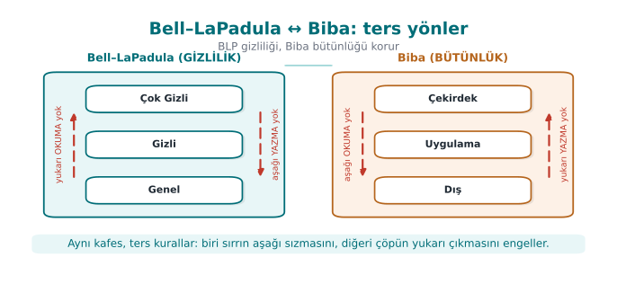
Opposite directions: BLP protects confidentiality (no read up + no write down), Biba protects integrity (no read down + no write up).
If data must be both confidential and trustworthy at once → it is only processed at its own level .
RTEU Computer Engineering · 2026-2027 Fall
CEN429 Secure Programming · Week 2
Clark–Wilson: Commercial Integrity
Instead of military levels, well-formed transactions + separation of duty (1987, banking):
CDI: data whose integrity is preserved (a balance).TP: only approved transactions touch a CDI (no direct writes).IVP: regularly checks consistency ("debits = credits").Separation of duty: initiator ≠ approver.
"Touch data not directly, but through verified transactions ."
RTEU Computer Engineering · 2026-2027 Fall
CEN429 Secure Programming · Week 2
Demo 03 — BLP and Biba Output
BLP: memur OKU operasyon BLP:RED => RED (yukari okuma)
general YAZ ilan BLP:RED => RED (asagi yazma)
Biba: aglayici YAZ kayit BIBA:RED => RED (yukari yazma)
islemci OKU gelen BIBA:RED => RED (asagi okuma)
DAC says VAR (allowed) in both cases; it is the system (MAC) rule that brings the denial.
RTEU Computer Engineering · 2026-2027 Fall
CEN429 Secure Programming · Week 2
The Unix Access Model
-rwxr-x--- → owner / group / others, each with read-write-execute .
Three identities: effective / real / saved UID.
setuid: the program runs with the authority of its owner (usually root) — powerful but dangerous.sticky bit: cannot delete someone else's file in /tmp.
Book: Recipe 2.1
RTEU Computer Engineering · 2026-2027 Fall
CEN429 Secure Programming · Week 2
Unix Permission Bits — Diagram
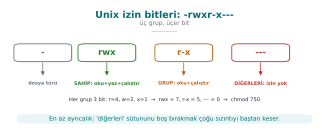
RTEU Computer Engineering · 2026-2027 Fall
CEN429 Secure Programming · Week 2
The Windows Access Model
Concept
Unix
Windows
Identity
UID/GID
SID
Permission
Mode bits
ACEs inside a DACL
Auditing
syslog (external)
SACL (built-in)
"Open to everyone"
chmod 777NULL DACL
DACL: who can do what (ACE = SID + right + allow/deny).Modern Windows: MIC and AppContainer (Biba-like). Book: Recipe 2.2
RTEU Computer Engineering · 2026-2027 Fall
CEN429 Secure Programming · Week 2
Demo 06 — TOCTOU Race (CWE-367)
code/week-02/06-toctou (WSL/Linux only) · Book: Recipe 2.3
GUVENSIZ (once lstat, sonra fopen):
>>> SALDIRI BASARILI: yazi gizli_hedef.txt'e yonlendirildi!
GUVENLI (O_NOFOLLOW ile tek adim):
reddedildi: hedef sembolik bag
The gap between checking and using is a race. Solution: a single atomic step (O_NOFOLLOW, O_EXCL), work through the fd.
RTEU Computer Engineering · 2026-2027 Fall
CEN429 Secure Programming · Week 2
Demo 12 — The ACE Evaluation Algorithm
code/week-02/12-ace-degerlendirme · Recipe 2.2
1a kanonik: RET Herkes TAM | IZIN Pazarlama YAZ => RED
1b bozuk: IZIN Pazarlama YAZ | ... RET Herkes => IZIN
2a NULL DACL (yabanci hesap) => IZIN (SAHIP_AL, IZIN_YAZ dahil!)
2b BOS DACL (ayni hesap) => RED
3b kalitim kesildi => RED (liste bitti)
Order matters: explicit DENY → explicit ALLOW → inherited DENY → inherited ALLOW
❌ NULL DACL = every right to everyone · ✅ grant the needed rights explicitly
The owner can change permissions no matter what the DACL says
RTEU Computer Engineering · 2026-2027 Fall
CEN429 Secure Programming · Week 2
Demo 13 — Unix Permissions, umask, setuid
code/week-02/13-unix-izin-umask · Recipe 2.1, 2.7, 1.3
ayse oku paradoks.txt ---rwxrwx sahip -> RED
zeynep oku paradoks.txt ---rwxrwx diger -> IZIN
0666 & ~umask: 000 -> rw-rw-rw- 022 -> rw-r--r-- 077 -> rw-------
seteuid(1001) r/e/s = 1001/1001/0 <- sakli UID hala 0!
The first matching class decides (owner → group → others)fopen() requests 0666 → for a sensitive file: open(..., 0600)Dropping privilege for good: setresuid() + verify
RTEU Computer Engineering · 2026-2027 Fall
CEN429 Secure Programming · Week 2
Demo 14 — RBAC, Separation of Duty, Clark–Wilson
code/week-02/14-rbac-clark-wilson · a bank simulation
ATA cem GISE SSD(GISE,ONAYCI) -> RED
OTURUM deniz GISE,DENETCI DSD(GISE,DENETCI) -> RED
OTURUM deniz DENETCI -> TAMAM
deniz IVP: beklenen 20250, bulunan 20250
SSD: cannot be assigned to two conflicting roles · DSD: cannot have both active in the same sessionOnly a certified TP touches a CDI; a large transfer → second-person approval
⚠️ If a faulty TP gets certified, the rules don't see it — the IVP catches it
RTEU Computer Engineering · 2026-2027 Fall
CEN429 Secure Programming · Week 2
Misconception: "We Verified Identity, So We Verified Authorization Too"
Misconception: A user who can log in can do anything.
Reality: Authentication is the question "who are you?"; authorization is the question "can you do this?" — separate steps.
CWE-862 (missing authorization), fourth on the 2025 CWE Top 25, is exactly this mistake.
RTEU Computer Engineering · 2026-2027 Fall
CEN429 Secure Programming · Week 2
Misconception: "If There's an Error, Let's Allow It"
Misconception: If the policy can't be read or is unclear, access should be granted so the user isn't inconvenienced.
Reality: The safe default principle says the exact opposite: if the policy can't be read, the answer must be deny (CWE-636, the "fail-open" error).
"Fail-closed" (deny on error) is the default for secure systems.
RTEU Computer Engineering · 2026-2027 Fall
CEN429 Secure Programming · Week 2
Misconception: "NULL DACL and an Empty DACL Are the Same"
Misconception: Both look like "no permissions."
Reality: A NULL DACL (no DACL at all) grants full access to everyone — including taking ownership. An empty DACL (a list with no ACEs) grants no rights to anyone .
The first is a serious vulnerability (CWE-732); confusing the two is dangerous (Demo 12).
RTEU Computer Engineering · 2026-2027 Fall
CEN429 Secure Programming · Week 2
Misconception: "ACE Order Doesn't Matter"
Misconception: The same ACEs in a different order give the same result.
Reality: Windows evaluates ACEs in order and stops at the first determining entry.
In canonical order, explicit deny entries come before allow entries; a manually mis-ordered DACL can cancel out an intended denial (Demo 12).
RTEU Computer Engineering · 2026-2027 Fall
CEN429 Secure Programming · Week 2
Misconception: "chmod 777 Fixed the Problem"
Misconception: Papering over an "access denied" error with chmod 777 is a practical fix.
Reality: Opening permissions to everyone doesn't solve the problem, it magnifies it .
Secrets should be created with 0600, and umask should be set deliberately at the start of the program (Demo 13).
RTEU Computer Engineering · 2026-2027 Fall
CEN429 Secure Programming · Week 2
Misconception: "We Set Up RBAC, So Separation of Duty Comes for Free"
Misconception: Setting up role-based access control automatically provides separation of duty.
Reality: If the same person is given both the "initiate refund" and "approve refund" roles, RBAC does not provide separation of duty.
A static (SSD ) or dynamic (DSD ) separation-of-duty constraint must be defined separately (Demo 14).
RTEU Computer Engineering · 2026-2027 Fall
CEN429 Secure Programming · Week 2
The Mobile Permission Model and Least Privilege
Every app runs in its own sandbox — it cannot access other apps' data by default.
Sensitive resources (camera, location, contacts) require runtime permission ; there's no access without user approval.
This is a hybrid model resembling DAC (user consent) combined with MAC (the system's mandatory sandbox boundary).
It is the concrete form , in today's mobile operating systems, of the principle of least privilege (Week 1).
RTEU Computer Engineering · 2026-2027 Fall
CEN429 Secure Programming · Week 2
Checklist — Access Control
[ ] I can distinguish DAC, MAC, and RBAC by "who decides? "
[ ] I can apply the BLP, Biba, and Clark–Wilson rules to a scenario.
[ ] I can explain the difference between authentication and authorization with an example.
[ ] I can interpret ls -l output, the setuid/sticky bits, and a umask calculation.
[ ] I can show why NULL DACL, empty DACL, and ACE order are critical .
[ ] I can explain how separation of duty is set up separately with SSD/DSD in RBAC.
RTEU Computer Engineering · 2026-2027 Fall
CEN429 Secure Programming · Week 2
5. Vulnerability Classification
RTEU Computer Engineering · 2026-2027 Fall
CEN429 Secure Programming · Week 2
CWE: A Catalogue of Weakness Types
CWE = the type of a weakness (SQL injection → CWE-89).CWE Top 25: that year's 25 most common/dangerous weaknesses.
CWE
Weakness
CWE-787
Out-of-bounds write
CWE-79
XSS
CWE-89
SQL injection
CWE-367
TOCTOU (Demo 06)
CWE-798
Hardcoded credentials/key
Hierarchical: pillar → class → base → variant. Pick the most concrete CWE.
RTEU Computer Engineering · 2026-2027 Fall
CEN429 Secure Programming · Week 2
Misconception: "CWE and CVE Are the Same Thing"
Misconception: Both mean the same thing and can be used interchangeably.
Reality: CWE is the type of a weakness (SQL injection → CWE-89). CVE is the identity of a specific flaw in a specific product (Heartbleed → CVE-2014-0160).
A CVE belongs to one or more CWE types.
RTEU Computer Engineering · 2026-2027 Fall
CEN429 Secure Programming · Week 2
Misconception: "Picking the Most General CWE Is Safe"
Misconception: When unsure, writing the top-level (general) CWE is safer.
Reality: A top-level entry like CWE-20 (improper input validation) doesn't explain the fix .
Rule: pick the most concrete CWE possible (preferably at the base level).
RTEU Computer Engineering · 2026-2027 Fall
CEN429 Secure Programming · Week 2
OWASP Top 10 and MASVS
Document
Scope
Type
CWE / Top 25
All software
Catalogue / priority
OWASP Top 10
Web
Awareness / priority
OWASP ASVS
Web
Verification standard
OWASP MASVS + MASTG
Mobile Verification + testing
MASVS-RESILIENCE = resistance to reverse engineering → this course's code obfuscation (Weeks 9, 14), RASP (Week 6), and white-box (Week 11) topics.
RTEU Computer Engineering · 2026-2027 Fall
CEN429 Secure Programming · Week 2
OWASP and MASVS — Diagram
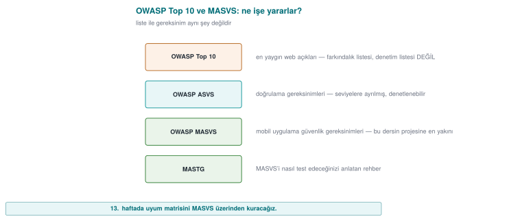
RTEU Computer Engineering · 2026-2027 Fall
CEN429 Secure Programming · Week 2
Misconception: "OWASP Top 10 Is a Checklist"
Misconception: If I satisfy the 10 items on the Top 10, I'm secure.
Reality: The Top 10 is an awareness document, not a verification standard.
Verifiable requirements live in ASVS for the web, and in MASVS and MASTG for mobile.
RTEU Computer Engineering · 2026-2027 Fall
CEN429 Secure Programming · Week 2
CVE and CVSS
CVE: the identity of a specific flaw in a specific product (CVE-2014-0160 = Heartbleed). A name , not a severity.CVSS: a flaw's severity , 0.0–10.0. Three groups: Base (fixed), Temporal, Environmental.
A CVE belongs to one or more CWE types .
RTEU Computer Engineering · 2026-2027 Fall
CEN429 Secure Programming · Week 2
CWE, CVE, CVSS — Diagram
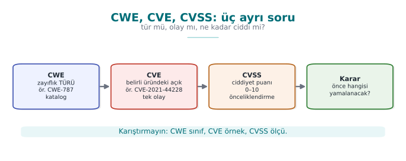
RTEU Computer Engineering · 2026-2027 Fall
CEN429 Secure Programming · Week 2
CVSS v3.1 Base Score Metrics
Metric
Question
Values
AV From where?
Network / Adjacent / Local / Physical
AC How hard?
Low / High
PR Privileges needed?
None / Low / High
UI Victim needed?
None / Required
S Does scope change?
Unchanged / Changed
C/I/A Impact?
High / Low / None
v4.0: separate VC/VI/VA + SC/SI/SA instead of scope; base score = CVSS-B.
RTEU Computer Engineering · 2026-2027 Fall
CEN429 Secure Programming · Week 2
Demo 05 — CVSS Calculator
code/week-02/05-cvss (Python)
AV:N/AC:L/PR:N/UI:N/S:U/C:H/I:H/A:H = 9.8 Kritik
... S:U -> S:C = 10.0 Kritik
AV:L (yerel) /PR:L/... C:H/I:H/A:H = 7.8 Yuksek
Remote + unauthenticated is highest; a scope change pushes it to 10.0.⚠️ The base score doesn't know the context : a 4.0 flaw that hits your asset exactly can matter more to you than a 9.8.
RTEU Computer Engineering · 2026-2027 Fall
CEN429 Secure Programming · Week 2
CVSS Score → Severity Band
Score
Band
0.0
None
0.1–3.9
Low
4.0–6.9
Medium
7.0–8.9
High
9.0–10.0
Critical
Even with the same impact (C:H/I:H/A:H), a remote + unauthenticated flaw scores a higher band than a local + authenticated one.
RTEU Computer Engineering · 2026-2027 Fall
CEN429 Secure Programming · Week 2
CVSS v4.0 in Brief
Released in 2023; fixes some of v3.1's weaknesses.
The base score is now called CVSS-B .
The Scope (S) metric was removed; replaced by separate Vulnerable System Impact (VC/VI/VA) and Subsequent System Impact (SC/SI/SA).
With exploit maturity (E) and threat/environmental metrics, CVSS-BTE can be computed.
This course's calculator was written for v3.1; in the field it's still the most common.
RTEU Computer Engineering · 2026-2027 Fall
CEN429 Secure Programming · Week 2
Misconception: "I'll Feed a v3.1 Vector into v4.0"
Misconception: A CVSS v3.1 vector works directly in a v4.0 calculator.
Reality: v4.0 has no Scope (S) ; it has AT, VC/VI/VA, SC/SI/SA metrics, and UI takes three values (N/P/A).
Vectors are not converted between versions, they're rebuilt .
RTEU Computer Engineering · 2026-2027 Fall
CEN429 Secure Programming · Week 2
CVSS's Common Mistake
Misconception: "CVSS is 9.8, let's patch it right away; 4.0 can wait."
The base score doesn't know the context : it measures only the flaw's own properties.
A 4.0 flaw that's exactly the door to your most valuable asset can matter more to you than a 9.8.
This is what the Environmental metrics and your asset table (S5) are for.
The score is a starting point for prioritisation, not the final word.
RTEU Computer Engineering · 2026-2027 Fall
CEN429 Secure Programming · Week 2
Assessor: From Finding to Score
Concrete questions for rating a finding reproducibly :
Can the attacker use this over the network , or only with the device in hand (AV)?
Does it need prior privilege or user interaction first (PR, UI)?
Does the impact stay in the affected component, or spill outside it (S)?
In this course's context (the program runs on the attacker's device), most findings come out local (AV:L) ; the risk doesn't drop even if the score does.
RTEU Computer Engineering · 2026-2027 Fall
CEN429 Secure Programming · Week 2
Beyond CVSS: EPSS
EPSS (Exploit Prediction Scoring System): the probability a flaw is exploited within 30 days (0–1).CVSS measures severity , EPSS measures probability — they answer different questions ."EPSS is high, so CVSS must be high too" is wrong ; the two are measured independently.
Reading them together clarifies the priority order.
RTEU Computer Engineering · 2026-2027 Fall
CEN429 Secure Programming · Week 2
Beyond CVSS: KEV
KEV (Known Exploited Vulnerabilities): a catalogue of flaws proven to be exploited.Every entry: a CVE id, evidence of exploitation, remediation guidance.
"Not in KEV means it's not being exploited" is wrong — absence from the list is not proof of safety.
A flaw in KEV must be handled as a priority , even with a low CVSS score.
RTEU Computer Engineering · 2026-2027 Fall
CEN429 Secure Programming · Week 2
SSVC: Decision Points
Five questions that turn a finding into a decision :
Is there an exploit? · Can it be automated?
What is the technical impact? · How widely is the mission affected?
How is public well-being affected?
The result is one of four decisions: Track / Track* / Attend / Act
RTEU Computer Engineering · 2026-2027 Fall
CEN429 Secure Programming · Week 2
Example: Five Findings, Two Rankings
No
Finding
System
EPSS
KEV
B1
No length check in the parser, remote code execution
Internet-facing
0.62
Yes
B5
Local privilege escalation in the driver
Employee computers
0.41
Yes
B4
Cookie missing the Secure flag
Internet-facing
0.08
No
Ranking by CVSS alone and ranking with EPSS+KEV added can come out differently ; B5 sits in the middle by CVSS but rises to the top because it's in KEV.
RTEU Computer Engineering · 2026-2027 Fall
CEN429 Secure Programming · Week 2
Misconception: "Device Flaws Score Low, So They're Unimportant"
Misconception: A flaw scoring AV:L (local access) can be ignored if the score is low.
Reality: In this course's attacker model, the device is already in the attacker's hands (white-box).
The risk doesn't decrease even if the score does; the score should be written alongside attack potential (time, expertise, equipment).
RTEU Computer Engineering · 2026-2027 Fall
CEN429 Secure Programming · Week 2
Practice: Build the Vector Yourself
Question: An attacker takes over a system completely over the network , without authentication , without user interaction (confidentiality, integrity, and availability are all fully broken). What is the CVSS v3.1 vector and score?
Answer: AV:N/AC:L/PR:N/UI:N/S:U/C:H/I:H/A:H → 9.8 (Critical) . If the scope had also changed (S:C), the score would rise to 10.0 .
RTEU Computer Engineering · 2026-2027 Fall
CEN429 Secure Programming · Week 2
The Vulnerability Lifecycle
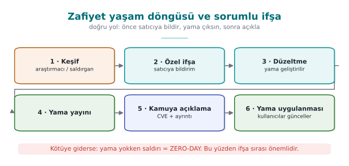
Zero-day: a flaw the vendor doesn't know about / has no patch for.Responsible disclosure: report to the vendor first, wait ~90 days, then disclose.Patch gap: once the patch ships, the flaw becomes public; whoever hasn't updated stays vulnerable (WannaCry).
RTEU Computer Engineering · 2026-2027 Fall
CEN429 Secure Programming · Week 2
The Lifecycle: Four Stages
Discovery: the flaw is found (a researcher, an attacker, or the vendor).Report: the researcher reports it to the vendor (or the attacker quietly uses it).Patch: the vendor writes and releases a fix.Release: the patch reaches the user; the risk ends if it's applied .
The time between every arrow is the window given to the attacker.
RTEU Computer Engineering · 2026-2027 Fall
CEN429 Secure Programming · Week 2
A Flaw's Lifeline — Diagram
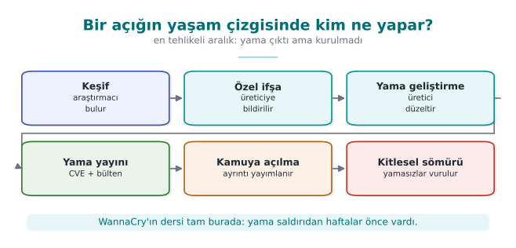
RTEU Computer Engineering · 2026-2027 Fall
CEN429 Secure Programming · Week 2
Responsible Disclosure vs. Full Disclosure
Responsible disclosure (coordinated)
Full disclosure
Who knows first?
The vendor
Everyone at once
Waiting period
~90 days (for the patch)
None
Goal
Protect users while pushing the vendor to act
Force the vendor's hand
Risk
Low (disclosed once a patch exists)
High (the flaw is known while unpatched)
Full disclosure is the controversial one in the industry.
RTEU Computer Engineering · 2026-2027 Fall
CEN429 Secure Programming · Week 2
Bug Bounty Programmes
Programmes where companies reward researchers who report flaws responsibly .
Goal: steer researchers toward responsible disclosure instead of full disclosure.
A gain for the researcher; early warning for the company.
Now standard practice at most large tech companies.
RTEU Computer Engineering · 2026-2027 Fall
CEN429 Secure Programming · Week 2
In the Field: What Happens When a Flaw Is Reported?
For a product team, the lifecycle is a process :
A reporting channel: security.txt, a security email address.
A responsible person/team.
A patch SLA: how quickly will it be fixed?
A release/patch announcement mechanism.
An assessment questions not just the code, but this process too.
RTEU Computer Engineering · 2026-2027 Fall
CEN429 Secure Programming · Week 2
Why Is Full Disclosure Controversial?
Question: Why is full disclosure considered risky?
Answer: The flaw is announced to everyone while there's no patch . It forces the vendor to act, but it also hands attackers a ready-made roadmap — while users are still unprotected.
RTEU Computer Engineering · 2026-2027 Fall
CEN429 Secure Programming · Week 2
Checklist — Vulnerability Classification
[ ] I know CWE's abstraction levels (pillar, class, base, variant) and the "most concrete entry" rule.
[ ] I can distinguish CWE, CVE, and CVSS in one sentence each.
[ ] I can build a CVSS v3.1 vector for a finding and compute the score by hand .
[ ] I can explain that EPSS, KEV, and CVSS answer different questions .
[ ] I can explain the vulnerability lifecycle, zero-day, patch gap, and responsible disclosure.
RTEU Computer Engineering · 2026-2027 Fall
CEN429 Secure Programming · Week 2
Term Project: This Week (S4)
[ ] Add one CWE to every row of your S4 attack/threat table.
[ ] Build an attack tree (Demo 04 format) for your most critical asset; cheapest path + most effective countermeasure.
[ ] Find the CVEs of the components you use and score them with CVSS .
[ ] Justify the appropriate access model (DAC / MAC / RBAC).
| ID | Tehdit | Varlik | Yol | CWE | Onlem | Bolum |
RTEU Computer Engineering · 2026-2027 Fall
CEN429 Secure Programming · Week 2
Class Activities
Classify the malware, pick the layer: type and first catching layer across six scenariosAttack tree duel: the other group hunts for a cheaper path not on the treeFrom matrix to model: write the same policy as an ACL, capability list, and BLP/Biba labelsFrom finding to patch order: rank five findings with CWE + CVSS + EPSS + KEV + SSVCTamper with the audit log: try modifying/deleting/truncating the Demo 11 chainCode-reading tournament: write the CWE, the attack, and the fix for four code piecesIncident autopsy: fill in CVE-CWE-CVSS-dates for Heartbleed/WannaCry/Log4Shell
RTEU Computer Engineering · 2026-2027 Fall
CEN429 Secure Programming · Week 2
Self-Check (Selected)
Difference between virus, worm, trojan horse?
Polymorphism ≠ metamorphism: what's the difference?
Does high entropy prove malice?
BLP's two rules, and what do they protect?
How does Biba differ from BLP?
Difference between DAC and MAC?
Difference between CWE and CVE?
What does the CVSS Base score not measure?
RTEU Computer Engineering · 2026-2027 Fall
CEN429 Secure Programming · Week 2
Self-Check — Answers (1–4)
A virus infects another program; a worm copies itself over the network on its own; a trojan horse looks useful while carrying hidden harm.
Polymorphic encrypts itself differently in every copy; metamorphic rewrites its own code.No. High entropy is a clue (encrypted/packed); alone it doesn't prove malice (legitimate compression is high-entropy too).BLP: no read up + no write down → protects confidentiality .
RTEU Computer Engineering · 2026-2027 Fall
CEN429 Secure Programming · Week 2
Self-Check — Answers (5–8)
Biba is the reverse of BLP: no read down + no write up → protects integrity .DAC : the owner decides permissions (flexible, leak-prone); MAC : the system's mandatory labelled rules (strict).CWE is a weakness type (e.g. CWE-416); CVE is a concrete flaw in a specific product.The CVSS Base score measures exploitability/impact, but alone doesn't measure how likely exploitation is in the field (threat/environment).
RTEU Computer Engineering · 2026-2027 Fall
CEN429 Secure Programming · Week 2
Self-Check (Continued)
The strength/weakness of signature and heuristic detection?
How is log injection (CWE-117) prevented?
What is responsible disclosure?
RTEU Computer Engineering · 2026-2027 Fall
CEN429 Secure Programming · Week 2
Self-Check — Answers (9–11)
Signature is fast but misses new samples; heuristic finds new ones but produces false alarms.Sanitise/escape line-break and control characters in user data written to the log; use structuredReporting a flaw to the vendor first , allowing time for a patch, and disclosing it publicly
RTEU Computer Engineering · 2026-2027 Fall
CEN429 Secure Programming · Week 2
Glossary
Term
Meaning
Polymorphic
Encrypted differently in every copy
Signature/heuristic
Known trace / suspicious behaviour
Entropy
A measure of randomness
DAC/MAC/RBAC
Access control models
BLP/Biba
Confidentiality / integrity model
CWE/CVE/CVSS
Type / concrete flaw / score
RTEU Computer Engineering · 2026-2027 Fall
CEN429 Secure Programming · Week 2
Glossary (continued)
Term
Meaning
EPSS
The probability a flaw is exploited within 30 days
KEV
A catalogue of proven exploited flaws
SSVC
A Track–Act decision from exploit/impact/prevalence
Responsible / full disclosure
Report to the vendor first / disclose publicly right away
Authentication / authorization
"Who are you?" / "Can you do this?"
Safe default
If the policy is unclear, the answer is deny (fail-closed)
RTEU Computer Engineering · 2026-2027 Fall
CEN429 Secure Programming · Week 2
Next Week
Week 3 — Data Security: In Transit, at Rest, in Use
This week we used the entropy measure to detect malware; next week we reuse it again to assess the disorder
This week's summary: classify the threat, model access, track flaws with catalogues (CWE/CVE),measure their severity (CVSS ). This framework is the foundation for the technical protections in
The vulnerability language we prioritised this week with CWE and CVSS will reappear in Week 12 as an input
RTEU Computer Engineering · 2026-2027 Fall
Speaker note: Last week we established the language of security (asset, threat, STRIDE, attack tree). This week we fill in three columns: threat (malware), defence (security models), common language (CWE/CVE/CVSS). There are six demos; keep the lab open in WSL or Visual Studio.
Speaker note: Compile the demos once beforehand (build.ps1 or build.sh inside code/). Keep the first three demos open so there's no waiting in class.
Speaker note: Ask the students: "What do you call something that infects your phone?" Most say "virus." After this week they'll use the right term.
Speaker note: Give the dates accurately. WannaCry spread to machines that had not updated AFTER the patch was released; we'll return to this "patch gap" at the end of the lecture.
Speaker note: The "enable macros" prompt is still an attack vector. Tell students never to enable macros in a document they don't recognise.
Speaker note: First explain the formula in words: every infected machine scans a random address, and infects it if it hits a susceptible one. Then give the Code Red and Slammer numbers.
Speaker note: First write the letters on the board: S, I, N. Then ask "what does every infected machine do?"; the answer is on this slide.
Speaker note: Halve the beta value and rerun; show how the saturation time stretches out. The real point: a single overflow flaw made the initial infection possible.
Speaker note: poli_1 and poli_2 use the same algorithm (xs32) with a different seed; poli_3 uses a different algorithm (lcg8) plus junk instructions. The pattern signature was looking for ALGO=xs32, which isn't in poli_3.
Speaker note: A narrow rule misses; a broad rule raises false alarms. A rule only catches the known; that's why it's used together with heuristic and behaviour-based methods.
Speaker note: Tripwire, AppLocker/WDAC, and code-signing checks all rest on this idea.
Speaker note: The assessor first modifies the file, then the expected value. If the second test isn't passed, the check only protects against accidents.
Speaker note: Read the table by how they got in, not by what the malware did. 1988-2008 is mostly a single overflow; after 2017 it's update and build processes.
Speaker note: Discussion question: which old epidemics' door did Office's default blocking of macros in documents from the internet (since 2022) close?
Speaker note: AND nodes force the attacker to break multiple layers together; the quantitative form of defence in depth.
Speaker note: A single line break embedded in a username wrote a fake administrator login into the log that never happened. Mention the format-string trap as a bridge to Week 4.
Speaker note: Schneier–Kelsey 1999. The verifier keeps the starting key offline. The strongest evidence is a remote copy the attacker cannot reach.
Speaker note: Military origin (1973). "No write down" seems odd at first; the goal is to prevent top-secret information from being written somewhere a clerk could see it.
Speaker note: In 1a and 1b the ACEs are the same, only the order differs. In the last step, show the demo's own file's real ACL with icacls.
Speaker note: This is a simulation; no real setuid file is created, no sudo is needed. The system's actual setuid programs are only listed.
Speaker note: Field equivalent: the four-eyes principle, split knowledge and dual control, daily reconciliation.
Speaker note: Use groups of 3-4; see the activity boxes in the lecture notes for timing.
Speaker note: ask first, then open the two answer slides.
ask first, then open the answer slide